Figura: Arquitectura Clean implementada
en el proyecto
Figura: Arquitectura Clean implementada
en el proyectoTech Solutions
Patrones de Software - Mag. Patrick Cuadros
Desarrollar una plataforma de generación y gestión de diagramas UML que ayude a los equipos de desarrollo colaboran en el diseño de software y que garantice la mantenibilidad, extensibilidad y calidad del código.
Generar diagramas UML automáticamente desde múltiples fuentes (código fuente, bases de datos)
Facilitar la colaboración en tiempo real entre arquitectos de software, desarrolladores y stakeholders
Mantener un historial completo de evolución de diagramas con capacidades de rollback.
Figura: Arquitectura Clean implementada
en el proyecto
Diagramas clave
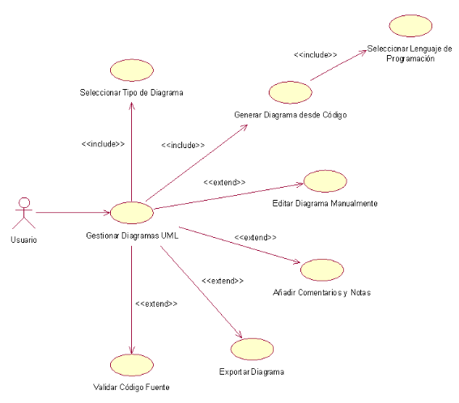
Diagrama de Caso de Uso del Módulo Iniciar Sesión incluyendo la acción de validar Usuario*
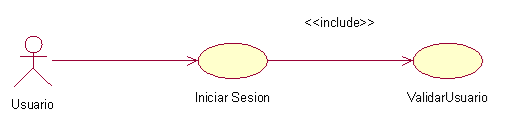
Diagrama de Caso de Uso del Modulo Gestionar Usuario
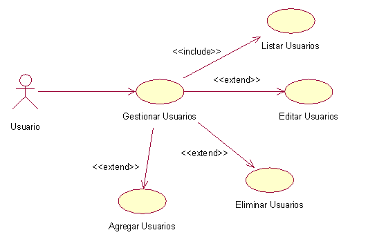
Diagrama de Caso de Uso del Módulo Gestionar Colaboración
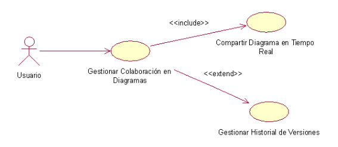
Diagrama de Caso de Uso del Módulo Gestionar Diagramas UML

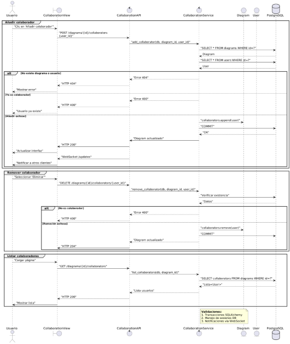
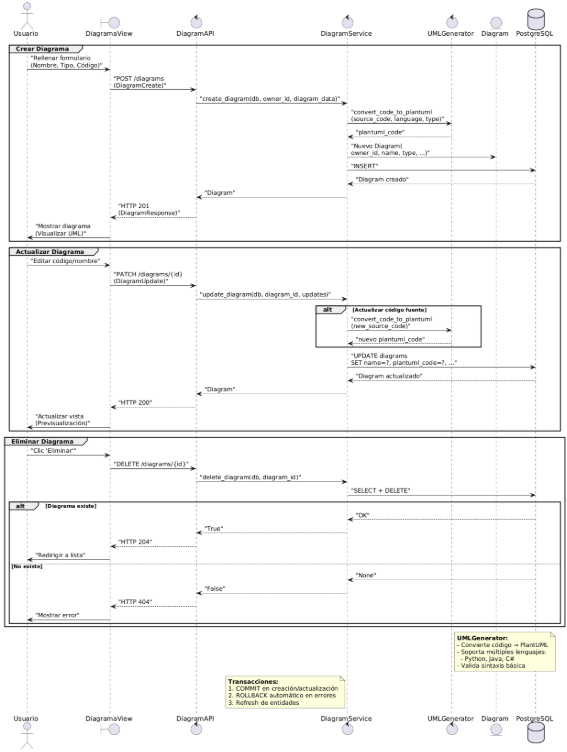
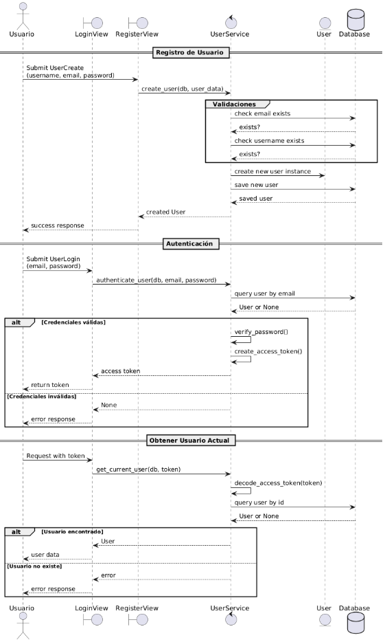
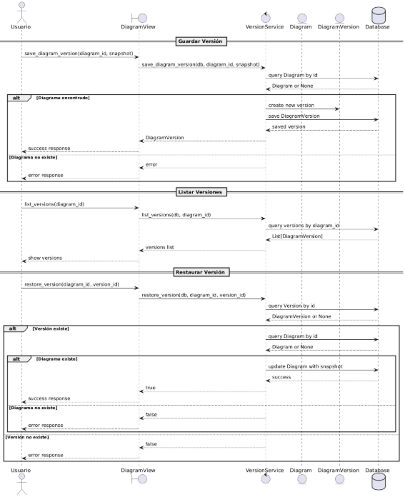
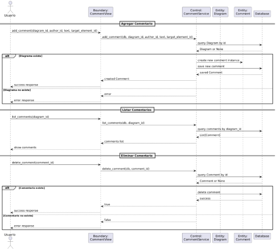

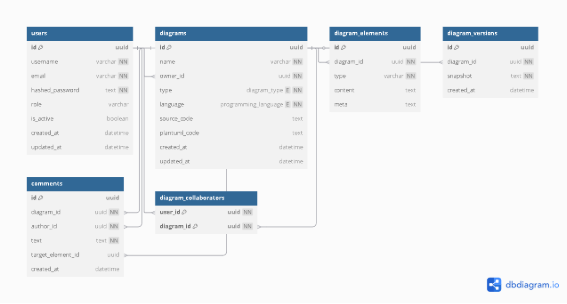
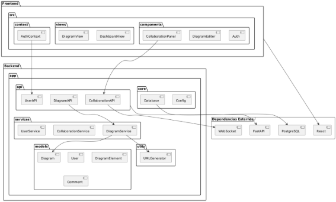
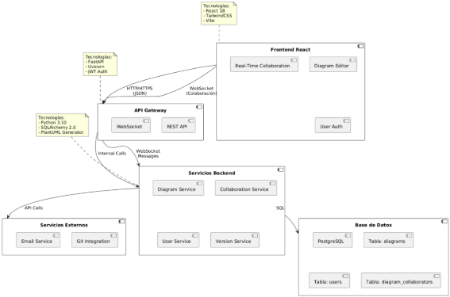
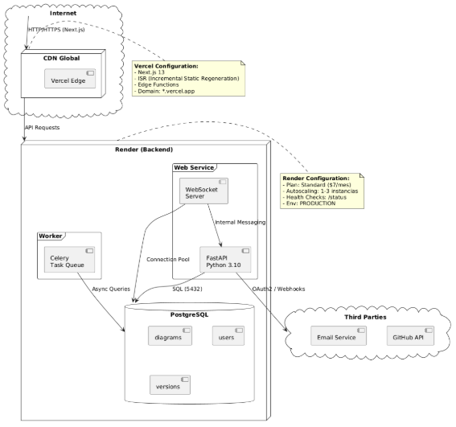